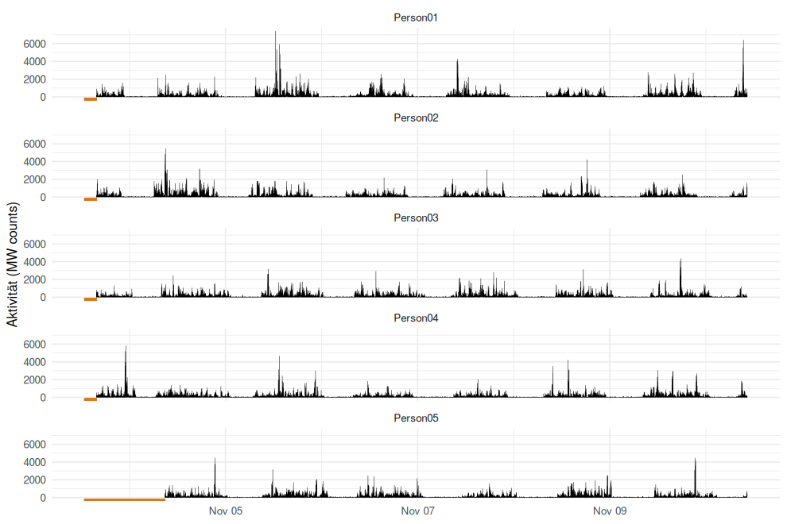
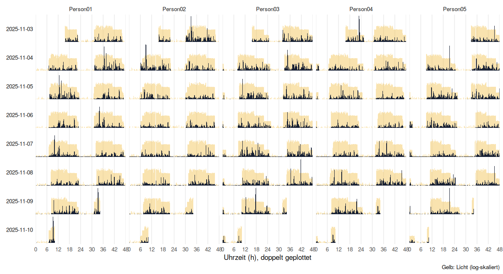
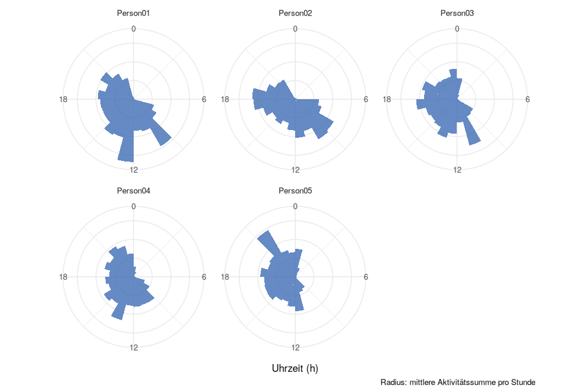
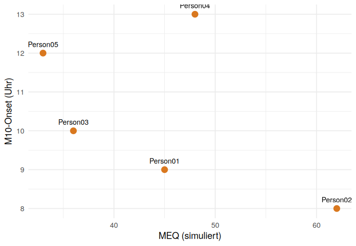
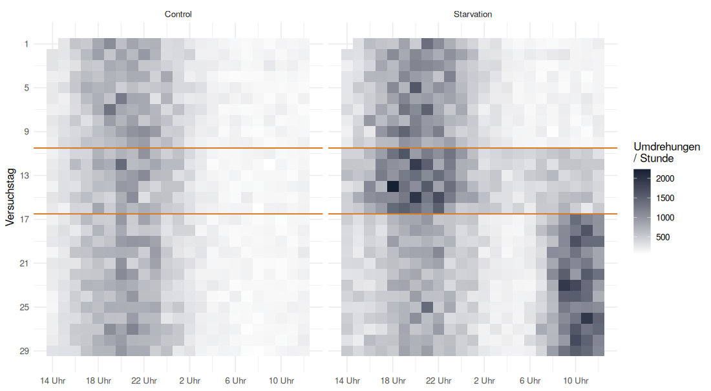
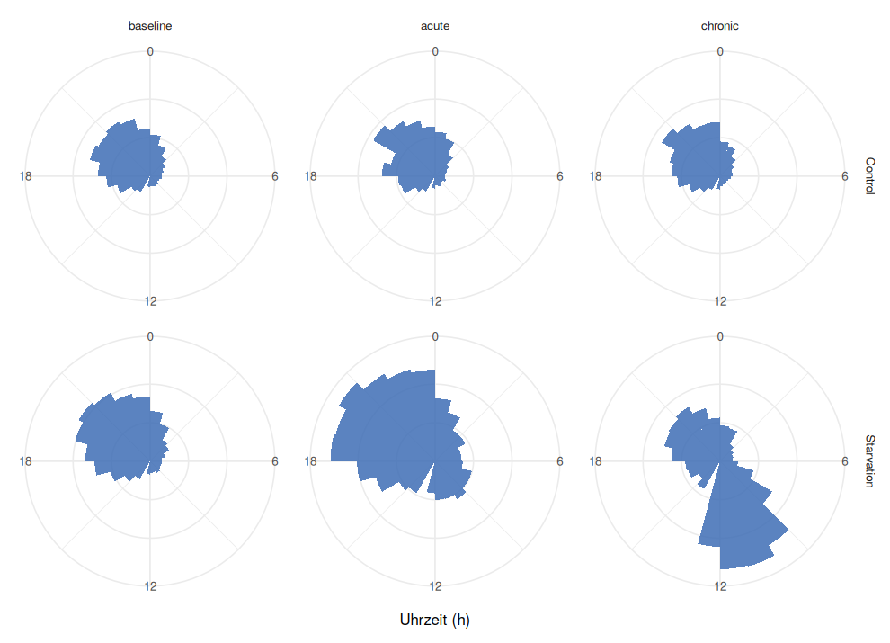
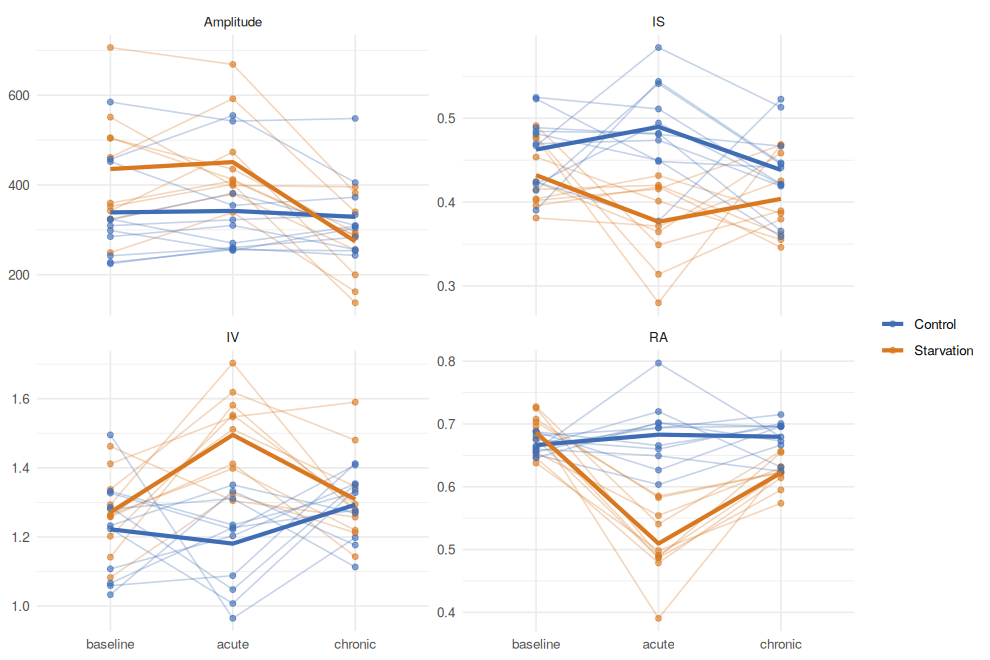
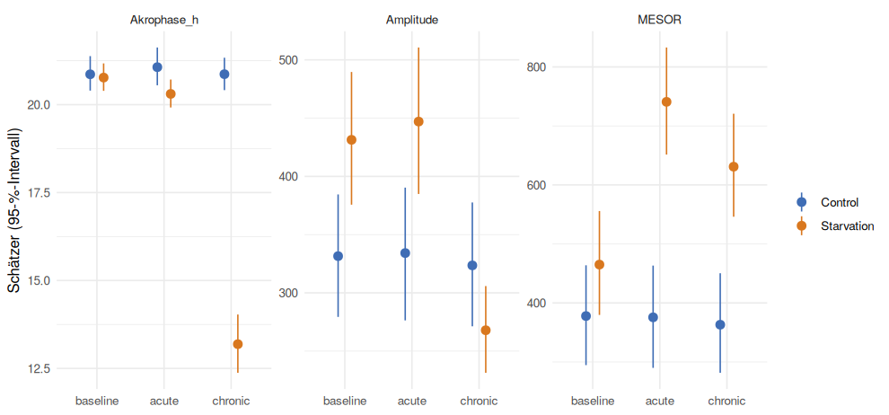
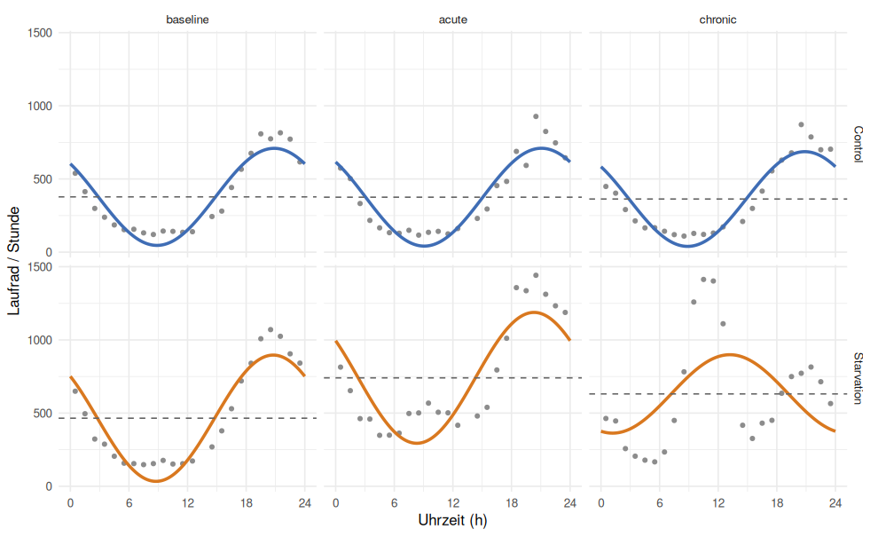

Analysebeispiele
Vom Rohdatenexport zu Kennwerten und Statistik – Schritt für Schritt, mit dem Code aus dem Workshop.
Inhalt
- A · MotionWatch 8: Features berechnen
- A1 Einlesen
- A2 Qualitätskontrolle
- A3 Stundenwerte
- A4 IS, IV, M10, L5, RA
- A5 Cosinor
- A6 Abbildungen
- B · Laufrad: 2 × 3-Design
- B1 Einlesen und Zeitachse
- B2 Exploration
- B3 Kennwerte pro Tier und Block
- B4 Mixed Model und Kontraste
- B5 Mixed-Cosinor
- C · Was in den Methodenteil gehört
Vorbereitung
Projektordner entpacken, workshop_R.Rproj in RStudio öffnen und einmal 00_setup.R ausführen. Alle Funktionen liegen in R/funktionen.R; die Formeln entsprechen eins zu eins den Folien.
source("R/funktionen.R")A · MotionWatch 8: Features berechnen
Fünf Personen, sieben Tage, 30-Sekunden-Epochen. Skript: 01_motionwatch.R.
A1 Einlesen
MotionWare exportiert pro Person eine CSV-Datei: Kopfzeilen mit Metadaten, dann Date,Time,Activity (MW counts),Light (lux). Auf deutschen Rechnern steht der Lichtwert mit Dezimalkomma – die Zeile 158,39,5125 bedeutet Aktivität 158 und Licht 39,5125. Ein normales read.csv() zerlegt das falsch. read_motionwatch() trennt deshalb nur an den ersten drei Kommas.
mw <- read_motionwatch_ordner("daten/motionwatch") # liest alle CSV-Dateien des Ordners
mw
#> datei id zeit aktivitaet licht epoche_sNeue Uhren? Einfach weitere Exporte in den Ordner legen – alle folgenden Schritte laufen über den ganzen Ordner.
A2 Qualitätskontrolle
„n/a“ steht für Zeiten ohne Aufzeichnung. Bei Person05 fehlt fast der ganze erste Tag.
mw |> group_by(id) |>
summarise(beginn = min(zeit), ende = max(zeit), fehlend = mean(is.na(aktivitaet)))
A3 Stundenwerte
IS, IV, M10 und L5 werden klassisch auf Stundenwerten berechnet. Eine Stunde zählt nur, wenn alle Epochen gültig sind. Mit dieser Regel stimmten M10 und L5 an echten Daten exakt mit MotionWare überein.
std <- stunden_aggregieren(mw)
# summe = Aktivitätssumme der Stunde (für IS, IV, M10, L5)
# mittel = mittlere Aktivität pro Epoche (für den Cosinor)A4 IS, IV, M10, L5, RA
npcra <- function(x, uhrzeit) {
ok <- !is.na(x); xx <- x[ok]; n <- length(xx); xm <- mean(xx)
xh <- tapply(xx, uhrzeit[ok], mean); p <- length(xh)
IS <- n * sum((xh - xm)^2) / (p * sum((xx - xm)^2))
d <- diff(x); d <- d[!is.na(d)] # nur gültige Nachbarstunden
IV <- n * sum(d^2) / ((n - 1) * sum((xx - xm)^2))
# M10 / L5: gleitende 10- bzw. 5-h-Fenster über das mittlere Profil
...
}
np <- std |> arrange(id, stunde_start) |> group_by(id) |> reframe(npcra(summe, uhrzeit))| Person | IS | IV | RA | M10-Onset | L5-Onset |
|---|---|---|---|---|---|
| Person01 | 0,55 | 0,79 | 0,95 | 09:00 | 01:00 |
| Person02 | 0,58 | 0,60 | 0,93 | 08:00 | 23:00 |
| Person03 | 0,59 | 1,02 | 0,94 | 10:00 | 02:00 |
| Person04 | 0,48 | 0,94 | 0,92 | 13:00 | 02:00 |
| Person05 | 0,58 | 0,92 | 0,94 | 12:00 | 03:00 |
Ausprobieren, wie sich die Werte bei mehr Jitter, Fragmentierung oder Lücken verändern: Feature-Labor.
A5 Cosinor
Der Cosinor ist ein lineares Modell mit Kosinus- und Sinusterm (Folie „Cosinor“). Amplitude und Akrophase werden aus den beiden Koeffizienten zurückgerechnet.
cosinor_lm <- function(y, t, tau = 24) {
fit <- lm(y ~ cos(2 * pi * t / tau) + sin(2 * pi * t / tau))
b <- coef(fit)
tibble(MESOR = b[1],
Amplitude = sqrt(b[2]^2 + b[3]^2),
Akrophase_h = (-atan2(-b[3], b[2]) * tau / (2 * pi)) %% tau,
R2 = summary(fit)$r.squared)
}
cos <- std |> filter(!is.na(mittel)) |> group_by(id) |>
reframe(cosinor_lm(mittel, uhrzeit + 0.5)) # +0.5: Mitte der Stunde| Person | MESOR | Amplitude | Akrophase | R² |
|---|---|---|---|---|
| Person01 | 106,9 | 98,4 | 14:32 | 0,40 |
| Person02 | 99,3 | 84,4 | 13:40 | 0,39 |
| Person03 | 97,2 | 78,9 | 16:14 | 0,44 |
| Person04 | 93,7 | 69,5 | 15:59 | 0,34 |
| Person05 | 90,9 | 79,1 | 17:53 | 0,43 |
Akrophase und M10-Onset liegen mehrere Stunden auseinander: Die Akrophase ist der Gipfel einer Sinuskurve, der M10-Onset der Beginn des aktivsten 10-Stunden-Fensters.
A6 Abbildungen
aktogramm(mw) # doppelt geplottet, Licht gelb hinterlegt
polarplot(std) # mittleres 24-h-Profil


B · Laufrad: 2 × 3-Design
21 Mäuse, stündliche Laufradsummen über 29 Versuchstage. Gruppe (zwischen Tieren): Control vs. Starvation. Block (Messwiederholung): baseline → acute → chronic. Skript: 02_laufrad_2x3.R.
B1 Einlesen und Zeitachse
Ein Versuchstag läuft von 14 bis 13 Uhr (23 Stundenwerte). Die Zeitstempel in der Excel-Tabelle sind gemischt: Text im US-Format („3/13/2024 9:59:59 PM“) und von Excel umgewandelte Daten, bei denen Tag und Monat vertauscht sein können. Dazu kommt ein AM/PM-Fehler. read_laufrad() vertraut deshalb nur der Uhrzeit und baut die Zeitachse aus Versuchstag und Stunde auf; verletzte Reihenfolgen werden erkannt und korrigiert.
lr <- read_laufrad("daten/laufrad/laufrad_simuliert.xlsx")
#> Korrigiert (AM/PM): Versuchstag 3
lr
#> id gruppe block versuchstag stunde rel t_h radB2 Exploration


B3 Kennwerte pro Tier und Block
Für IV werden fehlende Stunden als NA eingefügt, damit keine Differenz über eine Lücke gebildet wird. IS rechnet mit p = 23, weil 13–14 Uhr nie gemessen wird.
voll <- laufrad_vervollstaendigen(lr)
kw_np <- voll |> group_by(id, gruppe, block) |> reframe(npcra(rad, stunde))
kw_cos <- lr |> filter(!is.na(rad)) |> group_by(id, gruppe, block) |> reframe(cosinor_lm(rad, t_h))
kw <- left_join(kw_np, kw_cos, by = c("id", "gruppe", "block"))
B4 Mixed Model und Kontraste
Jedes Tier liefert drei Werte – einen pro Block. Ein zufälliger Achsenabschnitt pro Tier berücksichtigt die Messwiederholung.
library(lme4); library(lmerTest); library(emmeans)
m_is <- lmer(IS ~ gruppe * block + (1 | id), data = kw)
anova(m_is) # Haupteffekte und Interaktion
pairs(emmeans(m_is, ~ block | gruppe), adjust = "holm") # Blöcke je Gruppe
pairs(emmeans(m_is, ~ gruppe | block)) # Gruppen je Block| Kennwert | Effekt | F | p |
|---|---|---|---|
| IS | gruppe | 23,4 | < 0,001 |
| IS | block | 1,5 | 0,224 |
| IS | gruppe × block | 4,8 | 0,012 |
| IV | gruppe | 15,5 | < 0,001 |
| IV | block | 2,8 | 0,074 |
| IV | gruppe × block | 8,9 | < 0,001 |
| RA | gruppe | 44,4 | < 0,001 |
| RA | block | 27,1 | < 0,001 |
| RA | gruppe × block | 38,3 | < 0,001 |
| MESOR | gruppe | 15,9 | < 0,001 |
| MESOR | block | 58,5 | < 0,001 |
| MESOR | gruppe × block | 61,9 | < 0,001 |
Entscheidend im 2 × 3-Design ist die Interaktion: Verändert sich ein Kennwert über die Blöcke nur in der Starvation-Gruppe?
B5 Mixed-Cosinor
Jede der sechs Zellen bekommt eigene MESOR-, Kosinus- und Sinuskoeffizienten; jedes Tier darf zusätzlich eigenes Niveau, eigene Amplitude und Phase haben. Das ist dasselbe Modell, das cosinoRmixedeffects intern rechnet – hier transparent mit lme4.
d_cos <- lr |> filter(!is.na(rad)) |>
mutate(rrr = cos(2 * pi * t_h / 24), sss = sin(2 * pi * t_h / 24),
zelle = interaction(block, gruppe, sep = ","))
fit_cos <- lmer(rad ~ 0 + zelle + zelle:rrr + zelle:sss + (1 + rrr + sss | id),
data = d_cos, control = lmerControl(optimizer = "bobyqa"))
cos_zellen <- cosinor_zellen(fit_cos) # MESOR, Amplitude, Akrophase + 95-%-Intervall
cos_kontraste <- cosinor_kontraste(fit_cos, paare) # Differenzen zwischen ZellenDie Intervalle entstehen aus 2000 Ziehungen der festen Effekte (multivariate Normalverteilung) – in Sekunden statt in Minuten wie beim Bootstrap. Phasendifferenzen werden im Kreis gerechnet (−12 bis +12 h).


| Vergleich | Δ Akrophase (h) | 95-%-Intervall | p |
|---|---|---|---|
| acute,Control vs. baseline,Control | 0,2 | -0,3 bis 0,7 | 0,417 |
| chronic,Control vs. baseline,Control | 0,0 | -0,4 bis 0,4 | 0,959 |
| acute,Starvation vs. baseline,Starvation | -0,5 | -0,9 bis -0,1 | 0,013 |
| chronic,Starvation vs. baseline,Starvation | -7,6 | -8,7 bis -6,6 | < 0,001 |
| baseline,Starvation vs. baseline,Control | -0,1 | -0,7 bis 0,5 | 0,746 |
| acute,Starvation vs. acute,Control | -0,8 | -1,4 bis -0,1 | 0,022 |
| chronic,Starvation vs. chronic,Control | -7,7 | -8,6 bis -6,7 | < 0,001 |
C · Was in den Methodenteil gehört
- Datenbasis: Gerät, Epochenlänge, Anzahl Tage, Analysezeitraum.
- Zeitliche Auflösung für IS und IV (klassisch 60 min) – die Werte hängen stark davon ab.
- Umgang mit fehlenden Daten: z. B. „nur vollständige Stunden; IV nur aus Paaren gültiger Nachbarstunden“.
- Cosinor: Periode (24 h), Modell (Einzel-, Populations- oder Mixed-Cosinor), Akrophase in Stunden und mit Bezug (Uhrzeit oder ZT).
- Mixed Models: zufällige Effekte, Freiheitsgrade (z. B. Kenward-Roger), Korrektur für multiples Testen.
- Software und Pakete mit Versionsnummern (
sessionInfo()).